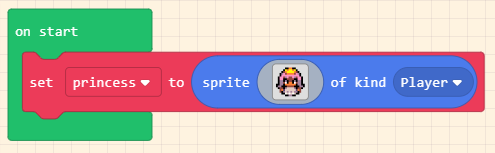

3. Trái tim nhấp nháy
1. Mục tiêu
Đối với các mạch điều khiển nói chung và Yolo:Bit nói riêng, chương trình đầu tiên thường là nhấp nháy hoặc chớp tắt đèn LED. Đây có thể coi là chương trình đơn giản nhất, nhưng ý nghĩa của nó thì lớn hơn thế. Vì đây là chương trình đơn giản nên xác suất để chúng ta viết sai chương trình là rất thấp. Do đó, bạn có thể dùng chương trình này để kiểm tra mạch Yolo:Bit có thực sự hoạt động chính xác hay không.
2. Thiết bị cần dùng
Mạch Yolo:Bit
Dây cáp USB Type C
3. Cài đặt Driver
Trước khi lập trình cho Yolo:Bit, bạn cần cài đặt Driver cho máy tinh. Xem hướng dẫn tại đây
4. Giới thiệu khối lệnh và lập trình
Giới thiệu khối lệnh
Chương trình trên Yolo:Bit được tổ chức thành 2 phần với ý nghĩa như sau:
Khối bắt đầu: Những câu lệnh trong khối này sẽ được thực hiện trước tiên, ngay khi bật nguồn hoặc nhấn nút Reset trên mạch Yolo:Bit (chỉ thực hiện 1 lần)
Khối lặp lại mãi: Các câu lệnh trong khối này sẽ được thực hiện ngay sau đó. Nhưng sau khi thực hiện xong, nó sẽ được thực hiện lại.

Viết chương trình
Đây là dạng kiến trúc mang tính đặc trưng của lập trình ứng dụng: Chương trình của bạn phải được lặp lại liên tục sau khi thiết bị hoạt động. Nếu chương trình dừng lại, điều này cũng có nghĩa là hệ thống của bạn đã bị hỏng.
Chương trình đầu tiên của chúng ta khá đơn giản, chỉ sử dụng 1 câu lệnh hiện hình ảnh, có màu xanh dương trong mục CƠ BẢN, như sau:

Chạy chương trình
Sau khi đã lập trình xong, chúng ta cần phải nạp chương trình này từ máy tính vào Yolo:Bit để nó có thể hoạt động được.
Quy trình này gồm có 2 bước cơ bản như sau:
Bước 1: Kết nối với Yolo:Bit
Từ thanh công cụ của chương trình, bạn chọn vào biểu tượng USB >> chọn cổng kết nối với mạch Yolo:Bit >> chọn nút Connect, như minh họa ở hình bên dưới:
{kind=link}
Bước 2: Chạy thử chương trình
Ở bước này, bạn chỉ cần nhấn vào biểu tượng nút Play (màu xanh dương) ở góc bên phải để chạy thử chương trình. Trong trường hợp muốn dừng, bạn nhấn vào nút Stop (màu đỏ) ở bên dưới bên phải màn hình.
5. Chương trình mẫu
Trái tim nhấp nháy: Tại đây
{kind=link}